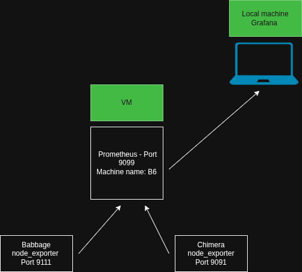

Chimera Performance Dashboard
Project Overview
This project focuses on collecting and displaying Chimera performance data in a clear and user-friendly dashboard.
Metrics
This section will show important system and GPU metrics such as CPU usage,
memory usage, GPU utilization, temperature, and power consumption.
Documentation
Our task is to collect performance metrics from servers on the UMass Boston CS
cluster and visually displays them on a dashboard website. The project uses two main tools:
- Prometheus - software that reads data metrics from a server and stores them in a database.
- Grafana - software that displays the data stored by Prometheus as visual charts and graphs.
In order for Prometheus to collect data, a node exporter must be deployed on each server.
A node exporter is the program that takes live readings from the system -
CPU usage, memory, system load, and more.
Prometheus reads from the node exporter in timed intervals and stores the results in a database,
building a history of the system's performance over time.
March 31, 2026

So far, we have accomplished 4 main tasks:
- Set up virtual machine on CS server - The VM runs Ubuntu on the CS server. All group members have access by SSHing into the machine.
- Run node exporter on Babbage and Chimera - Babbage is the CS department's GPU server. Chimera is the cluster we are monitoring. We ran node_exporter on both, successfully reading their metrics.
- Prometheus data collection - Prometheus is successfully scraping data from the node exporters and storing it.
- Grafana display - Grafana is connected to Prometheus and correctly displaying the collected metrics.
Team Members
Blake, Phoenix, Stephanie, Desmond, Dhruv Aihemaiti